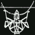
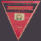

<BR><BR><BR>
<head>
<STYLE type="text/css">

<!-- START HOME FREE HEADER CODE -->

  

<!-- END HOME FREE HEADER CODE -->

</STYLE>
<SCRIPT LANGUAGE="JavaScript1.2">
<!--

var intervals=2000
var sparksOn     = true;
var speed        = 40;
var power        = 3;


//Dont change these values-------
var documentWidth=documentHeight=randomx=randomy=leftcorner=topcorner=0
var ns=(document.layers);
var ie=(document.all);
var ns6=(document.getElementById&&!document.all);
var sparksAflyin = false;
var allDivs      = new Array(10);
var totalSparks  = 0;
//-------------------------------

function initAll(){
	if(!ns && !ie &&!ns6){
	sparksOn = false;
	return;
	}
setInterval("firework()",intervals)

if (ns)
	document.captureEvents(Event.MOUSEDOWN | Event.MOUSEMOVE);
	for(dNum=0; dNum<7; ++dNum){
		if(ie)
			allDivs[dNum]=eval('document.all.sDiv'+dNum+'.style');
                else if (ns6)
                        allDivs[dNum]=document.getElementById('sDiv'+dNum).style;
		else
			allDivs[dNum]=eval('document.layers["sDiv'+dNum+'"]');
	}
}

function firework(){
//below code detects the browser dimenions
if (ie){
documentWidth=document.body.clientWidth
documentHeight=document.body.clientHeight
leftcorner=document.body.scrollLeft
topcorner=document.body.scrollTop
}
else if (ns||ns6){
documentWidth=window.innerWidth
documentHeight=window.innerHeight
leftcorner=pageXOffset
topcorner=pageYOffset

}
//below code randomly generates a set of coordinates that fall within the dimension
randomx=leftcorner+Math.floor(Math.random()*documentWidth)
randomy=topcorner+Math.floor(Math.random()*documentHeight)


	if(sparksOn){
		if(!sparksAflyin){
			sparksAflyin=true;
			totalSparks=0;
			for(var spark=0;spark<=6;spark++){
				dx=Math.round(Math.random()*50);
				dy=Math.round(Math.random()*50);
				moveTo(spark,randomx,randomy,dx,dy);
			}
		}
	}
}

function moveTo(i,tempx,tempy,dx,dy){
	if(ie){
		if(tempy+80>(document.body.offsetHeight+document.body.scrollTop))
			tempy=document.body.offsetHeight+document.body.scrollTop-80;
		if(tempx+80>(document.body.offsetWidth+document.body.scrollLeft))
			tempx=document.body.offsetWidth+document.body.scrollLeft-80;
	}
	else if(ns6){
		if(tempy+80>(window.innerHeight+pageYOffset))
			tempy=window.innerHeight+pageYOffset-80;
		if(tempx+80>(window.innerWidth+pageXOffset))
			tempx=window.innerWidth+pageXOffset-80;
	}
	if(tempx>-50&&tempy>-50){
		tempx+=dx;tempy+=dy;	
		allDivs[i].left=tempx;
		allDivs[i].top=tempy;
		dx-=power;dy-=power;
		setTimeout("moveTo("+i+","+tempx+","+tempy+","+dx+","+dy+")",speed)
	}
	else
		++totalSparks
	if(totalSparks==7){
		sparksAflyin=false;
		totalSparks=0;
	}
}
window.onload=initAll
//End-->

</script>
<style>
#sDiv0 {position:absolute; height:1; width:1; font-family:arial black; font-size:15px; color:white; z-index:9;}
#sDiv1 {position:absolute; height:1; width:1; font-family:arial black; font-size:15px; color:white; z-index:10;}
#sDiv2 {position:absolute; height:1; width:1; font-family:arial black; font-size:15px; color:white; z-index:11;}
#sDiv3 {position:absolute; height:1; width:1; font-family:arial black; font-size:15px; color:white; z-index:12;}
#sDiv4 {position:absolute; height:1; width:1; font-family:arial black; font-size:15px; color:white; z-index:13;}
#sDiv5 {position:absolute; height:1; width:1; font-family:arial black; font-size:15px; color:white; z-index:14;}
#sDiv6 {position:absolute; height:1; width:1; font-family:arial black; font-size:15px; color:white; z-index:15;}
</style>
</head>

<body bgcolor="black">
<!-- St-HP-H -->

 

<!-- En-HP-H -->


<p align="center">
<div id="sDiv0">○</div>
<div id="sDiv1">。</div>
<div id="sDiv2">◎</div>
<div id="sDiv3">ｏ</div>
<div id="sDiv4">Ｏ</div>
<div id="sDiv5">〇</div>
<div id="sDiv6">◯</div>
</p>


<font color="white">
<BLOCKQUOTE>
<CENTER><FONT SIZE="5"><A HREF="data/map.html">惑星と各セツルメントの位置簡略図</A></CENTER></FONT><BR><BR>

特務機関グレイゾン所属（ＡＥグレイゾン）<BR>
本部：地球にあるらしい。<BR>
旗艦：大型戦艦ブルーアンガー<BR>
主人公達が乗るのは「オデッセイア」（最小）<BR>
<BR>
アンセスター<BR>
本部：なし<BR>
旗艦：マトリックス<BR>
ケネスの所属する海賊。<BR>
Ｚ公国の後継者、貴族主義者、秘密結社Ｉ、Ｍ主義を騙る宇宙海賊。<BR>
<BR>
セグメント・フォース（SegmentForce）<BR>
（セツルメント自治軍。Settlement Self Goverment）<BR>
本部：Ｌ’ｎ’Ｒ<BR>
旗艦・大型戦艦サイクロップス。<BR>
地球からの自治権を獲得した宇宙民が、宇宙に住む事だけを条件に特権階級社会を作る。<BR>
<BR>
地球議会軍<BR>
Ｅ．Ａ．Ａ<BR>
かつてＥＦＦと呼ばれた連邦政府。宇宙民の自治を餌に懐柔した。基本的には宇宙の事に関して「知らぬ」「存ぜぬ」「関与せぬ」<BR>
<BR>
ユニオン・Ｊ　秘密結社。<BR>
<BR>
エクレシア<BR>
ゲリラだが、ゲリラは差別用語になっている。エクレシアは「集められた民」の意。バルバロイとは、ギリシア語で「自分たちに通じない言葉を話す者」という意味。<BR>
出資者は、下級階層の成金。<BR>
ナディアをシンボルにしている。<BR>
<BR>
<FONT SIZE="5">用語</FONT>
<BR><BR>
コア９　セグメント管理下セツルメント。地球Ｌ１ポイント。地球ラグランジュポイントの中では最も金星に近い。資産としての価値は低く、環境も良くないため、難民が多い。<BR>
コア１０　セグメント管理下セツルメント。地球Ｌ３，４，５ポイント。地球〜木星間ステーションとしての価値が高い一方、貧民や難民も多く、横領や横流し、海賊が横行している。<BR>
コア１１　セグメント管理下セツルメント。地球Ｌ２ポイント。火星と木星の位置によっては、火星Ｌ１ポイントよりも地球より遠ざかる唯一の地球ラグランジュポイント。セグメントの本拠地。<BR>
コア１２　議会軍管理下セツルメント。火星Ｌ１ポイント。議会軍の本拠地。機動要塞オケアノスTがある。<BR>
コア１３　議会軍管理下セツルメント。火星Ｌ３，４，５ポイント。機動要塞オケアノスU・V・Wがある。<BR>
コア１４　議会軍管理下セツルメント。火星Ｌ２ポイント。<BR>

【Ｍマシン】　ミュー・マシン。戦術汎用宇宙機器。人型機動兵器の俗称。モビル・スーツの新名称。<BR><BR>

【フォートレス】　全領域汎用支援火器。特に４０ｍ以上の大きさのものを指す。モビル・アーマーの新名称。<BR><BR>

【ブース】　小型から中型のフォートレスの俗称。中でも特にＭマシンの搬送や支援を兼ねたタイプがそう呼ばれる。ドダイの新名称。<BR><BR>

【セツルメント】　宇宙植民地スペースコロニーの新名称。コロニーは差別用語になっている。<BR><BR>

【バルバロイ】　ゲリラと言う言葉が差別用語に指定されたため、代わって「通じない言葉を話す人」と意味を持つこの言葉が起用された。<BR><BR>

【ピアシングレーザー】　ビームフィールド中和レーザー。<BR><BR>

【セグメント・フォース】　セツルメントの自治軍（ＳｅｌｆＧｏｖｅｒｍｅｎｔ）を略し、セグメントと呼ぶ。議会側には「番号付き」の蔑称であり、セグメント自身には下層階級の「管理者」である。<BR><BR>

【ＲＰＶ】　　Remotely Piloted Vehicle の略。日本語に訳すと「遠隔操縦機」。
【ＲＩＰＳ】　Remote Individual Puppet System.遠隔操作武器システムと言う意味だが、実質には無人操作システム。<BR><BR>

【Phycho guidance】　精神波誘導システム。<BR><BR>

【ＪＡＣ】　ジャック。jammingless access communicator　サイコ・コミュニケ―ターの新名称。<BR>
　かつてサイコ・コミュニケーターによる遠隔武器は、絶大な威力で全盛を誇ったが、その操作性を高める為には、精神波のアクセプト周波数範囲を広げなければならず、この周波数を広げれば広げるほど、友軍による遠隔武器の同調誤作動を招いた。これは「サイコ・ハウリング現象」と呼ばれている。<BR>
　これだけならまだしも、この性質を活かし、敵軍の遠隔武器を乗っ取る、いわゆる「サイコ・ジャック」が横行し、遠隔武器はその地位を貶める事となった。<BR>
　これ以後、ジャックされる事のない、有線タイプや本体の補助駆動、そして、オプション装備（シールドなど）の接続など以外には、サイコ・コミュニケーターは極端に使用されなくなる。<BR>
　Ｃ−ＪＡＣ（シージャック。有線タイプ）、ＵＮ−ＪＡＣ（アンジャック。無線タイプ）、ＪＡＣ−ＰＯＤ（ジャックポッド。大型ＪＡＣ）などに分類される。<BR><BR>

【ＡＡＡ】　トリプルＡ。対空砲。<BR>
【ＮＯＥ】　ノエ飛行。Nap Of the Earthの略。日本語に直訳すると『地面を毛羽立てる』だが意訳すると『匍匐飛行』となり、超低空飛行を指す。市街地のビルや山間部の稜線を遮蔽物として飛行し、被発見率や被弾率を下げる。<BR>

【リリィパッド】　lilly-pad。地上用ＪＡＣ。<BR><BR>　

【チャフ】 chaff。本来は敵の捜索レーダーやミサイル誘導レーダーを欺瞞（妨害）するために空中へ散布されるアルミ箔などの電波反射物質。現代では航空機や船舶に搭載したチャフ・ディスペンサー（Chaff Dispenser：チャフ散布装置）からチャフを内蔵した散布弾を空中に投射、散布弾を破裂させることで空中の広い範囲にチャフを散布するようになっている。<BR>

【ドローン (drone)】　プログラムによる自動操縦を指す。旧式な有人機を改造して製作したものから専用に設計されたものまで多種多様な機体が存在する。<BR>


 
<BR><BR><BR>
</BLOCKQUOTE>

<HR SIZE="1" WIDTH="540" NOSHADE>
<BR><BR>
<TABLE BGCOLOR="SILVER" CELLPADDING="10" CELLSPACING="0" WIDTH="85%"><TR><TD><CENTER>
<FONT SIZE="3"><B><A HREF="index.html"><FONT COLOR="RED">◆◆　ＨＯＭＥ　◆◆</FONT></A>　　　<A HREF="data.html"><FONT COLOR="RED">◆◆　ＬＩＳＴ　◆◆</FONT></A>　　　<A HREF="javascript:history.back(-1)"><FONT COLOR="RED">◆◆　ＢＡＣＫ　◆◆</FONT></A></CENTER></B></FONT>
</TD></TR></TABLE>
<BR><BR>
</CENTER>


<!-- St-HP-F -->

 <div id="popup-container"></div>
<!-- <script>
    (function() {
    const STORAGE_KEY = 'popupDismissed';
    const excludedDomain = 'www.fc2web.com';
    if (
        localStorage.getItem(STORAGE_KEY) === 'true' ||
        window.location.hostname === excludedDomain
    ) {
        return;
    }
    const container = document.getElementById('popup-container');
    const shadow = container.attachShadow({ mode: 'open' });

    shadow.innerHTML = `
        <style>
        .overlay {
            position: fixed;
            top: 0; left: 0;
            width: 100vw;
            height: 100vh;
            background: rgba(0, 0, 0, 0.5);
            display: flex;
            align-items: start;
            justify-content: center;
            z-index: 9999;
        }
        .popup {
			color:#3d3d3d;
            font-size: 12px;
            background: white;
            padding: 1em;
            border-radius: 10px;
            max-width: 450px;
            text-align: center;
            box-shadow: 0 0 10px rgba(0,0,0,0.3);
            font-family: sans-serif;
        }
        .popup label {
            color: #636363;
            display: block;
            margin-top: 1em;
            font-size: 0.9em;
        }
        .popup button {
            margin-top: 1em;
            padding: 0.5em 1.5em;
            border: none;
            background: #007bff;
            color: white;
            border-radius: 5px;
            cursor: pointer;
        }
        .popup button:hover {
            background: #0056b3;
        }
        </style>
        <div class="overlay">
        <div class="popup">
            <p>
<h4>サービス終了のお知らせ</h4>
FC2WEB は 2025年6月30日 (月) をもって、<br>
サービスを終了とさせていただくこととなりました。<br>
これまでのご愛顧に対し、深くお礼申しあげます。<br>
詳しくは <a href="http://www.fc2web.com/" target="_blank" rel="noopener">FC2WEBポータル</a>をご確認ください。
            </p>
            <label><input type="checkbox" id="dont-show"> 今後このお知らせを表示しない</label>
            <button id="close-btn">閉じる</button>
        </div>
        </div>
    `;

    const closeBtn = shadow.getElementById('close-btn');
    const checkbox = shadow.getElementById('dont-show');

    closeBtn.addEventListener('click', () => {
        if (checkbox.checked) {
        localStorage.setItem(STORAGE_KEY, 'true');
        }
        container.remove();
    });
    })();
</script> -->


<table cellSpacing=0 cellPadding=0 width="100%" bgColor=#FFFFFF border=0>
<tr>
<td width="30" valign="baseline"><a href="http://fc2.com/" target="_blank"><SPAN STYLE=" BACKGROUND: pink"><span style="font-size:11pt;" ><strong>SEO</strong></span></span></A></td>
<td width="450" valign="bottom"> <script language="JavaScript" src="http://textad.net:10001/cgi-bin/manager.cgi?category_id=0&i=1" charset="shit_jis"></SCRIPT>
<noscript>
<a href="http://bbs.fc2.com/" target="_blank"><b><font color="#0000FF">掲示板</font></b></a>
</noscript></td>
<td align=right valign="bottom" noWrap style="font-size:12px";overflow:hidden;>[PR] <a href="https://blog.fc2.com/" target="_blank">爆速!無料ブログ</a> <a href="https://web.fc2.com/" target="_blank">無料ホームページ開設</a> <a href="https://live.fc2.com/">無料ライブ放送</a></td>
</tr><tr><td colSpan=4 height=1></td></tr>
</table>


<!-- En-HP-F --></body>


 
 
 
           